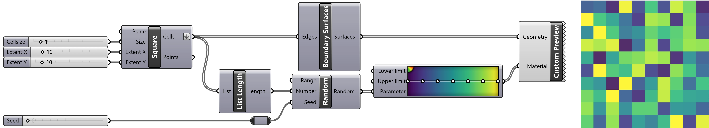

Randomness
Randomness
Randomness • unpredictable patterns or processes • have a probability distribution
Stochasticity • Entropy • Noise • Creative Contingency
What is random here?
Windswept pines
Stochasticity • branching • windswept morphology • disturbance ecology • elevation gradient
What is random here?
Point Cloud Landscape
Noise • environment • sensor • processing
What is random here?
Andrew Kudless, Color Slice, 2013-2014
Andrew Kudless, Color Slice, 2013-2014
Creative Contingency • novelty • variation • tension
Randomness
in Ecological Patterns
Spatial homogeneity
Spatial homogeneity
Grids • are spatially homogeneous • with fewer ecological niches • supporting less biodiversity
Ecological Succession
Ecological Succession
As grids breakdown • due to mortality & succession • they become more random • more spatially heterogeneous
Randomness with Grasshopper
Randomness
Standard Normal Distribution
Standard Normal Distribution
Ecological Gradients
Caused by • topography • climate • soil • temporal processes • growth & decay • edge effects • etc
Gaussian Distribution
Gaussian Distribution
Laplace distribution
Poisson distribution
Noise
Noise • as confused signal • or unwanted information
White Noise
Static • with a standard normal distribution
Semiconductor, Brilliant Noise, 2006
Solar wind • as white noise • and experimental music
Cellular Distance Noise
Cellular Gradient Noise
Perlin Noise
Gradient Noise
Multifractal Noise
Billow Noise
Randomness
in Planting Design
Randomness • creates variation • and repetition • for naturalistic aesthetics • or ecological function • at scale
Mixed Planting System
Bettina Jaugstetter, ABB Ladenburg Industrial Park
Bettina Jaugstetter, ABB Ladenburg Industrial Park
Modular planting • site specific planting mixes • planted evenly spaced • at random • module by module
Random Seeding
Tom Stuart Smith, The Barn Pairie
Tom Stuart Smith, The Barn Pairie
Random seeding • spatial heterogeneity • with minimal work • and low maintenance • dynamic and spontaneous • as regenerates from seed
Procedural Planting
Procedural Planting
Procedural Planting
Procedural Planting
Point cloud modeling • using Perlin billow noise • for more structure than randomness
Procedural Mowing
Michael Geffel, Viridic Disturbance
Michael Geffel, Viridic Disturbance
Procedural mowing • for spatial heterogeneity • and an aesthetic of care
Randomness in Paving
Land Collective, Cummins Distribution Headquarters
Land Collective, Cummins Distribution Headquarters
Procedural paving • using randomness • for an aesthetic of variation
Noise in Bricklaying
Gramazio & Kohler, Augmented Bricklaying
Gramazio & Kohler, Augmented Bricklaying
Gramazio & Kohler, Augmented Bricklaying
Bricklaying • in a Perlin noise pattern • guided by augmented reality
Robotic bricklaying
Learn more at baharmon.github.io